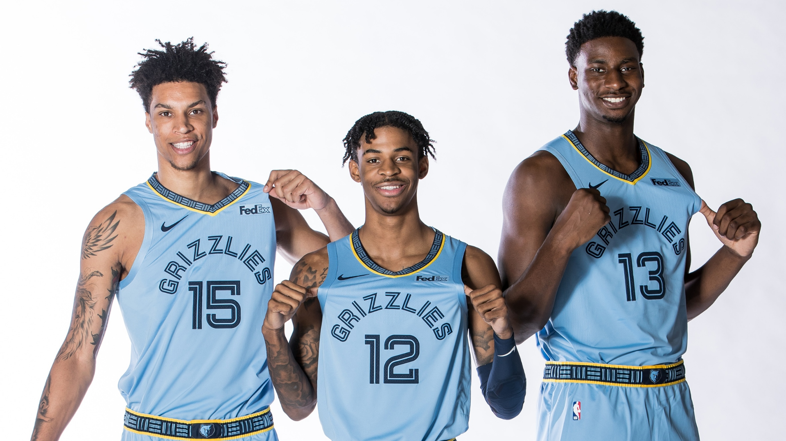

A young NBA team on the rise reppin’ the 901. This team is led by recently crowned Rookie of the Year Ja Morant, 2nd year big man Jaren Jackson Jr, the mid-first round pick who was 4th in ROTY voting Brandon Clarke (should have been 3rd), and 1st time Head Coach Taylor Jenkins. Prior to the pandemic, they were one of the most entertaining young teams in the NBA. In my opinion, they are a few pieces and years away from playoffs. I think they will eventually bring the 1st ever NBA Championships to Memphis.
There is nothing like some good wings. I enjoy making wings in the air fryer but my favorite place to go for wings is The Wing Guru. They are very pricey but so worth the price. My favorite flavor are the Triple J sauce and the Honey Suicide. The Honey Suicide are extremely hot, but I love getting this flavor every once in a while. I think they have the BEST wings in Memphis
I recently got into this Web Programming course at Tech901. I am excited about learning to Code and being able to develop websites. I want to be a Front-End Developer, but I eventually want to get into being a Full Stack Developer over time. I know I have to dedicate a lot of time to coding because it will not come easy. I KNOW I am up for the challenge and ready to take a step forward in my life.